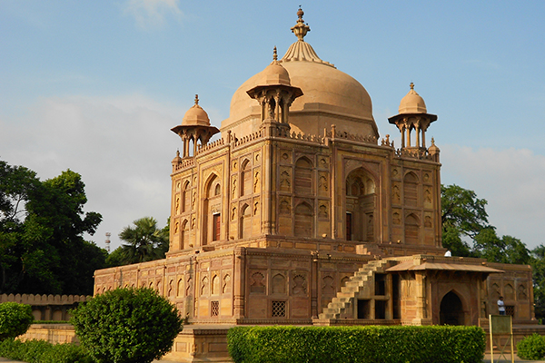
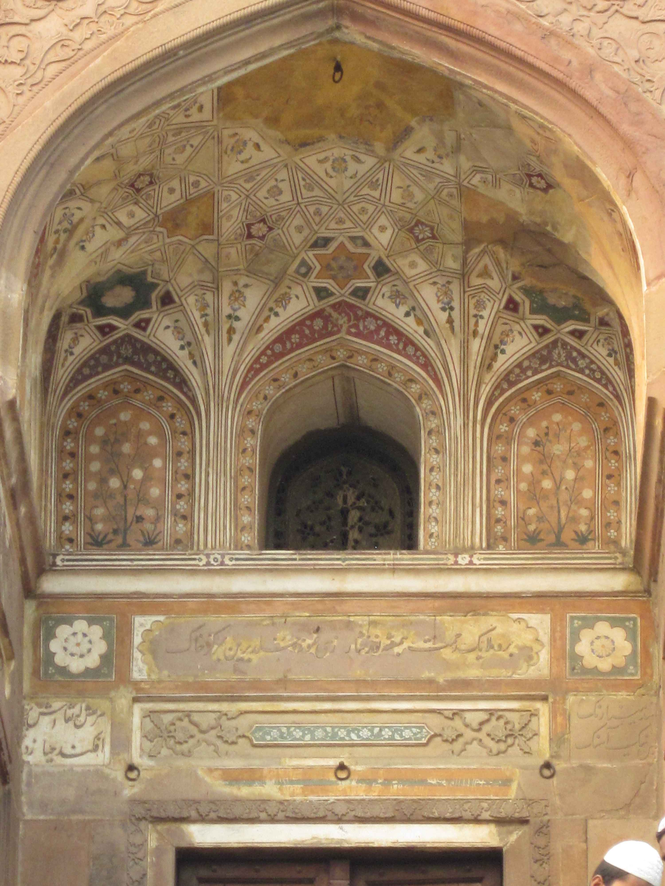
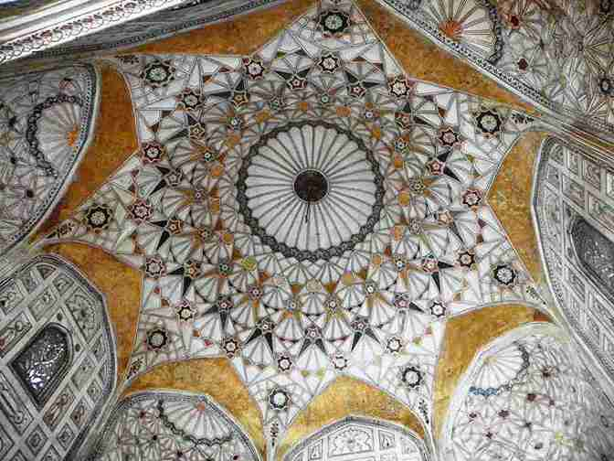

|  |
Khusro Bagh is a large walled garden and burial complex located in muhalla Khuldabad, close to the Prayagraj Junction railway station, in Prayagraj, India. It is roughly 6 km from the Akbar fort built-in (year. 1556-1605). It is situated over forty acres and shaped like a quadrangle.
It is listed as an Indian Site of National Importance. It includes the 4 tombs:
Decorated arch of the Tomb of Nithar |
The four sandstone mausoleums within this walled garden, present an exquisite example of Mughal architecture. The design of its main entrance, the surrounding gardens, and the three-tier tomb of Shah Begum, who died in 1604, has been attributed to Aqa Reza, Jahangir's principal court artist. Shah Begum, originally Manbhawati Bai, was the daughter of Raja Bhagwant Das of Amber. Distressed by the discord between her husband Jahangir and son Khusrau, she committed suicide in 1604 by swallowing opium. Her tomb was designed in 1606 by Aqa Reza and is a three storied terrace plinth without a main mound, inviting comparisons with Fatehpur Sikri by experts. The tomb however has a large chhatri that surmounts the plinth and the arabesque inscriptions that adorn her tomb were carved out by Mir Abdullah Mushkin Qalam, Jahangir's greatest calligrapher.
Next to the Begum's is the tomb of Khusrau's sister, Nithar. Architecturally, this is the most elaborate of the three. It lies on an elevated platform and is adorned with panels depicting the scalloped arch motif. Within the plinth are rooms whose ceilings have been elaborately painted with stars in concentric circles. The central room has on its walls floral decorations depicting Persian cypresses, wine vessels, flowers and plants.
Nithar's tomb interior |
The tomb of Khusrau, is the last of the three tombs in Khusro Bagh. Khusro was first imprisoned within the garden after he rebelled against his father, Jahangir, in 1606. Following an attempt to escape, he was blinded on Jahangir's instructions. In 1622 he was killed on the orders of Khusrau's brother and Jehangir's third son Prince Khurram, who later became the Emperor Shah Jahan. The tomb has fretwork windows and the tomb of his mare lies near his own.
Khusrau's tomb was completed in 1622, while that of Nithar Begum's, which lies between Shah Begum's and Khusrau's tombs, was built on her instructions in 1624-25. Nithar's mausoleum is however empty and it does not contain her tomb within it.
During the Revolt of 1857 Khusrau Bagh became the headquarters of the sepoys under Maulvi Liaquat Ali who took charge as the Governor of liberated Allahabad. In Allahabad however the Mutiny was swiftly put down and Khusro Bagh was retaken by the British in two weeks.